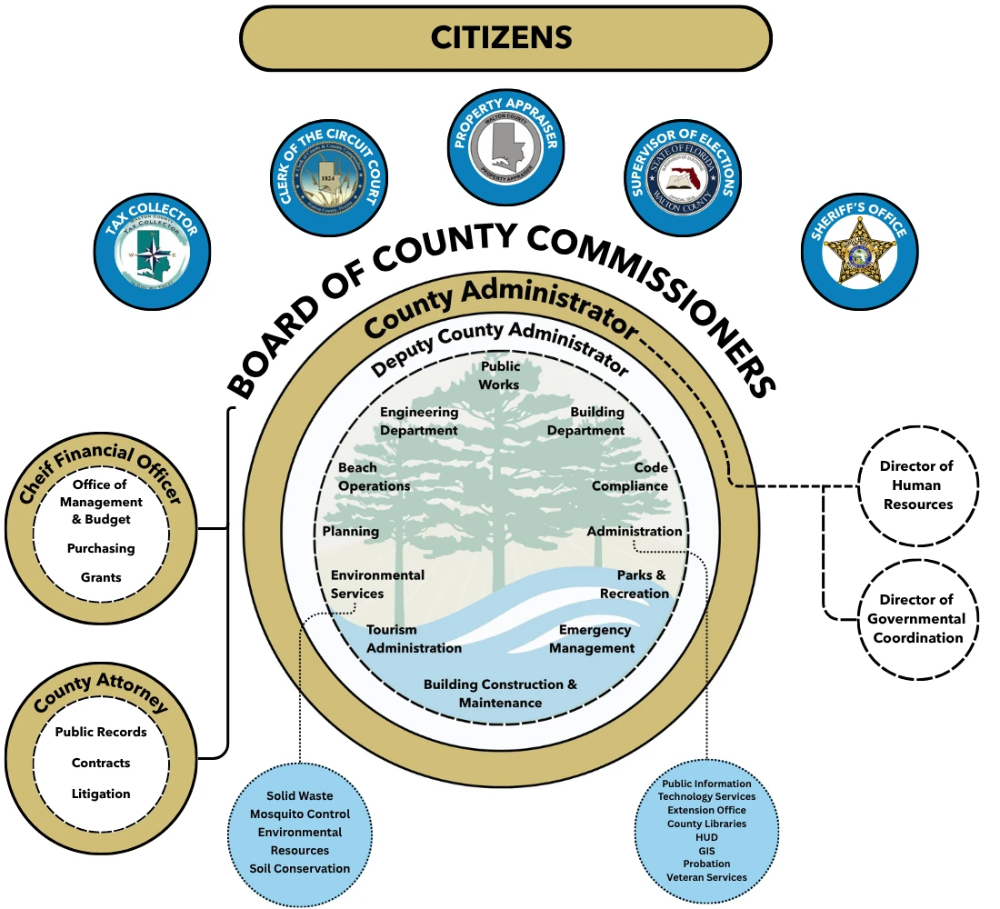

Introduction and Overview
Organizational Structure
The graphic below illustrates the organizational structure of Walton County Government and its accountability to the citizens it serves. Constitutional officers elected directly by voters are displayed beneath the “Citizens” section, reflecting their independent roles within county government.
The Board of County Commissioners provides overall policy direction and oversight through three primary direct reports: the Chief Financial Officer, the County Administrator, and the County Attorney. The Director of Human Resources and the Director of Governmental Coordination report directly to the County Administrator, while other operational departments and service areas are administered through the Deputy County Administrator.
